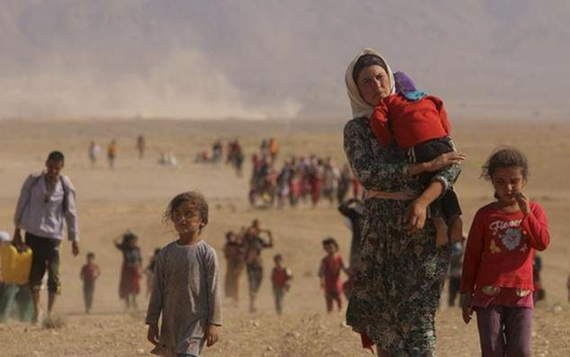

Les récents attentats islamistes ont relégué au second plan de l’actualité la question des flux migratoires. Or, ces deux phénomènes peuvent être interprétés comme deux manifestations convergentes d’une même crise identitaire. Celle-ci a deux visages : d’une part, celui du déracinement des populations autochtones en raison du mondialisme et du multiculturalisme et, d’autre part, celui de la déstabilisation démographique due à une immigration massive qui ne s’est pas vue imposer d’obligation d’assimilation culturelle. L’ampleur de cette crise est naturellement renforcée par le contexte de la guerre de subversion et de conquête menée par l’islamisme.
Cependant, l’essentiel de la « classe » politico-intellectuelle en a d’autant moins pris la mesure qu’elle s’auto-persuade, au nom de l’idéologie multiculturaliste, qu’une fois le péril extérieur de Daesh éradiqué et les difficultés économiques intérieures réglées, les tendions identitaires seront gommées. C’est sur ce point que se renforce une profonde distorsion entre une partie grandissante du peuple et ses actuelles élites. Pour analyser pourquoi et comment cette vague de migrants est rejetée par une majorité de Français, plusieurs critères peuvent être identifiés : la question peut être analysée sous les angles de la sémantique (1), de la géopolitique (2), de la morale (3) et, enfin, de l’économique et du social (4).
1. L’ANGLE DE LA SÉMANTIQUE
Dans l’affaire des immigrants, l’aplomb des politiques dans le choix des mots a révélé soit leur impréparation, soit leur entreprise de manipulation. Mettant d’abord en exergue l’urgence du règlement d’une crise humanitaire, ils ont subrepticement glissé vers l’affirmation d’une implantation massive et durable des nouveaux venus. L’utilisation du yoyo sémantico-idéologique pour anesthésier la force de résistance de l’opinion publique et museler son instinct de survie a pu être jugée méprisable : pour apitoyer, les migrants ont été appelés des réfugiés (alors qu’ils ne viennent pas tous de zones de guerre) ; mais ils sont redevenus des migrants pour justifier leur présence décrétée définitive.
La différence de traitement et de couverture médiatique entre les atrocités commises par l’État islamique et la détresse des migrants sur leurs frêles esquifs a sauté aux yeux. L’exploitation de l’image (terrible en soi) de cet enfant noyé est honteuse quand, par ailleurs, les vidéos des égorgements de Chrétiens ont été cachées au grand public. C’est vouloir contraindre à l’empathie envers les réfugiés tout en refusant d’expliquer la cause de leur émigration : la volonté expansionniste et totalitaire (qui ne date pas de 1948 et de la création de l’État juif !) de l’islam(isme).
Refuser de s’interroger sur l’organisation et le financement des filières de clandestins ou de constater que les réfugiés sont très majoritairement de jeunes hommes (qui, en âge de combattre, abandonnent « courageusement » femmes et enfants) permet de ne pas définir cet exode pour ce qu’il est : un acte de guerre favorisant le délitement de l’identité des pays d’accueil.
2. L’ANGLE DE LA GÉOPOLITIQUE
Quand des pays musulmans extrêmement riches refusent d’accueillir des réfugiés, y compris leurs frères dans la foi, mais se déclarent prêts à financer la construction de lieux de culte en Europe, ils disent explicitement leur volonté de conquête religieuse. Puisqu’aucun d’eux ne secoure et n’accueille des Chrétiens en leur assurant la liberté publique du culte, pourquoi l’Europe n’applique-t-elle pas l’élémentaire principe de réciprocité ?
Le traitement indifférencié (sous prétexte de non-discrimination) des victimes directes (celles qui risquent leur peau ou leur liberté) et indirectes (celles qui vivent dans de mauvaises conditions mais ne craignent pas les représailles des organisations islamistes) s’est révélée profondément discutable. Car ceux dont les maisons sont rasées, les fils torturés et assassinés, les filles kidnappées et violées, ce sont des Chrétiens et des Yézidis. Donner à ces derniers l’exclusivité de l’accueil serait donc parfaitement juste. Aimer l’autre n’implique pas de le préférer à soi-même et aux siens. La fraternité ne se dissout pas dans une indifférenciation égalitariste. Il existe un ordre de la solidarité qui veut que l’on vienne d’abord en aide à ceux qui vous sont le plus proche.
Or, l’arrogance et les menaces de certains migrants – débarquant aux cris d’Allah est grand et commettant intimidations et brimades contre des réfugiés chrétiens – sont rapidement devenues intolérables. Ces nouveaux venus ressemblent plus à des envahisseurs qu’à des demandeurs d’asile. Les accepter sans condition ne peut qu’accélérer le processus d’islamisation des sociétés européennes. Et quel magnifique cheval de Troie pour des terroristes islamistes que ce flux migratoire leur permettant de s’infiltrer en Europe.
L’incurie des politiques qui n’ont pas su traiter les causes de la submersion migratoire qui commence mais exigent des peuples d’en subir les effets devient patente. Feindre de ne pas comprendre que la conquête islamique, hier rampante, mute pour devenir agressive (les femmes européennes étant traitées en butin), apparaît d’une telle lâcheté que certains osent désormais se demander si cela ne relève pas plus de la haute trahison que de l’aveuglement.
3. L’ANGLE DE LA MORALE
Mais, ce n’est pas tout. Car un moralisme culpabilisateur a participé au discours ambiant sans-frontiériste. Les exhortations d’ecclésiastiques à un accueil universel sont apparues inconséquentes aux yeux mêmes de croyants pourtant naturellement portés à une obéissance de principe envers l’autorité religieuse.
Elles ont été jugées comme traduisant un christianisme dénaturé, masochiste, oublieux de l’hostilité intrinsèque de l’islam à son égard. Ces déclarations ne concernant pas le dogme de la foi, elles n’engagent donc pas le fidèle. Mais, véritable nihilisme couvert des oripeaux de la fraternité, l’humanitarisme xénophile peut conduire certains à une auto-flagellation confinant à la négation de soi sous prétexte, notamment, de repentance vis-à-vis de l’époque coloniale.
Or, la puissance publique n’est pas plus au service de l’homme abstrait qu’elle ne l’est de tous les hommes. Elle a en charge la destinée d’un corps social dont elle doit préserver la cohésion. Le pouvoir politique a la responsabilité du bien commun qu’il ne saurait laisser détruire sous prétexte d’un intérêt particulier. Prétendre aimer l’humanité pour ne la point servir dans sa propre patrie est hypocrite. Détruire le corps social d’accueil au nom de l’amour du lointain peut être criminel. Les politiques ont le devoir de faire respecter le patrimoine matériel et spirituel du pays qu’ils gouvernent. Si une trop grande part de la population cultive une identité exogène, cela peut conduire la société au chaos.
En outre, personne n’a le droit d’exiger l’asile ; c’est l’hôte qui, dans certaines circonstances, peut avoir le devoir de l’accorder. Or, les nouveaux migrants ne frappent pas à la porte ; ils la défoncent. Et, forcer la frontière, c’est nier le corps social dans lequel il est prétendu demander l’hospitalité. Pour ne pas être pervertie, la vertu de charité exige du discernement et de la prudence. L’accueil est conditionnel : recevoir une personne chez soi suppose d’avoir des valeurs communes avec elle. Qui plus est, admettre celle qui ne les partage pas est, du point de vue de la morale, une participation objective à ses « mauvaises œuvres ». Quant à celui qui est accueilli, il serait d’une parfaite indignité s’il ne faisait pas preuve d’une loyauté exemplaire dénuée de toute dissimulation. Il doit se fondre dans l’esprit du lieu qui le reçoit ; s’il se montre perturbateur et revendicatif, il ne peut qu’être congédié manu militari.
4. L’ANGLE ÉCONOMIQUE ET SOCIAL
Cependant, pour les élites bourgeoises mondialisées, les patries sont des espaces indifférenciés et les peuples des masses interchangeables pourvu que perdure et s’amplifie le libre-échange. Le déploiement d’énergie et de moyens financiers que les pouvoirs publics refusaient aux pauvres autochtones mais qu’ils trouvent miraculeusement pour les migrants a naturellement choqué. L’indécence a atteint son comble quand des « indigènes » ont été chassés des hébergements d’urgence (et même, semble-t-il, de logements sociaux) pour faire place aux nouveaux venus.
Quant au discours du haut-patronat – enclin à considérer l’immigration financièrement bienfaisante parce que permettant de faire pression à la baisse sur la rémunération des salariés –, il a été si rapidement jugé écœurant que certains de ses représentants ont finalement trouvé plus judicieux de faire machine arrière. Enfin, l’invocation de l’argument selon lequel l’Europe vieillissante devrait se renouveler et se régénérer grâce à l’immigration, alors que les pouvoirs publics autorisent et finalement organisent le massacre, chaque année, de centaines de milliers d’enfants à naître innocents, a été dénoncée comme scandaleuse.
L’accueil empressé des nouveaux immigrés en appellera inéluctablement d’autres. Vague après vague, le flux permanent, démultiplié par les fécondités différentielles, cela constitue, à terme, un authentique risque de submersion. Les « réfugiés » sont de véritables agents de déstabilisation démographique et des bombes à retardement. Mais, les peuples européens ont été prévenus par les plus hautes instances politiques : le flux migratoire n’en est qu’à ses débuts et concernera des millions d’individus.
CONCLUSION PROVISOIRE : LA PRÉGNANCE DE LA CRISE IDENTITAIRE MENANT À UNE SIMPLIFICATION DES OPTIONS POLITIQUES
Malgré les intimidations et les culpabilisations (accusations de xénophobie ou de racisme), il n’est plus question pour une part grandissante de l’opinion publique d’avoir honte de son héritage culturel et de s’excuser de vouloir rester enracinée. Elle considère que, s’ajoutant aux étrangers et aux descendants d’étrangers, peut-être naturalisés mais non assimilés, déjà présents, la nouvelle vague d’immigration aggrave le péril qui menace l’harmonie sociale et dénature l’identité du pays : aucun étranger n’a de droit automatique à vivre en France et les immigrés qui ne font pas souche en se convertissant à la culture française n’ont pas vocation à y rester sauf s’il y va de l’intérêt et dans les conditions fixées par le pays d’accueil.
La crise identitaire devient prégnante dans le débat politique. La gravité de la situation semble conduire à une simplification des options politiques. D’aucuns pensent le moment venu pour les Français d’exiger que les intérêts des partis et les carrières personnelles cèdent devant l’impérieuse nécessité du rassemblement, dans le respect des sensibilités et des enracinements, du camp des réfractaires, de ceux qui refusent de collaborer à la rupture identitaire que l’immigrationnisme essaie d’imposer.
Partager cette page